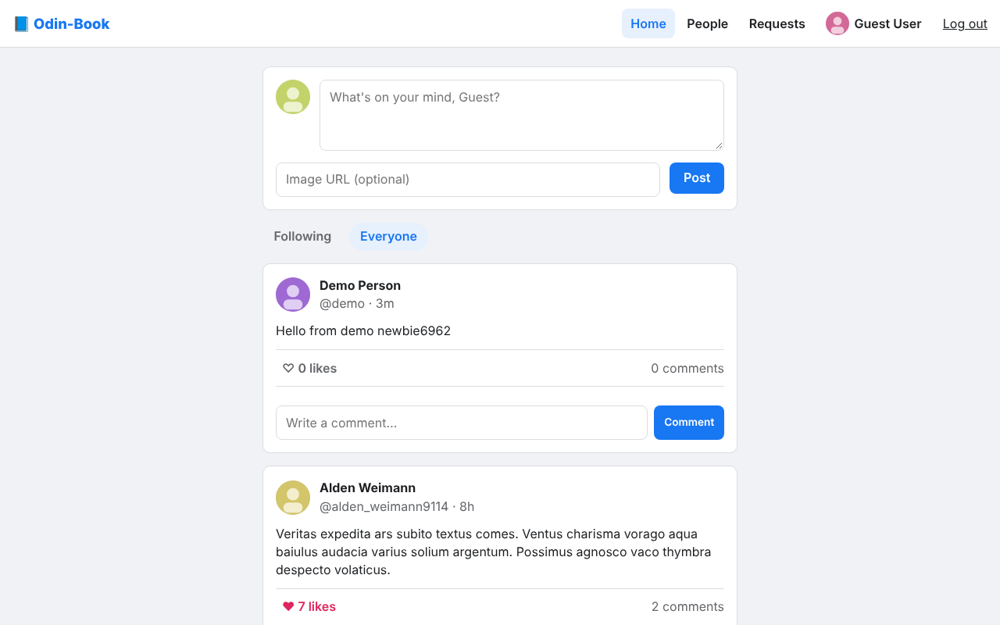
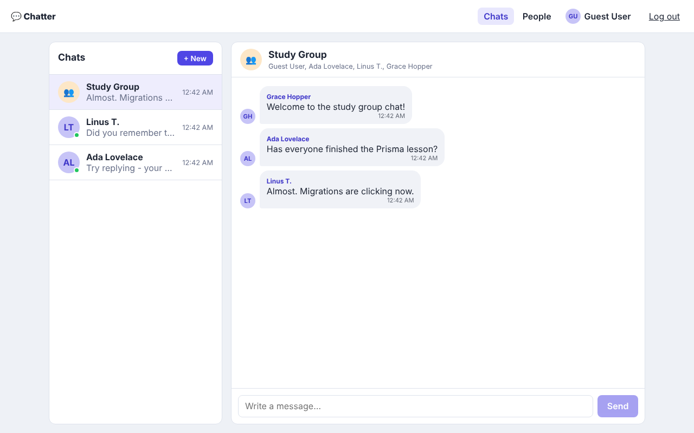
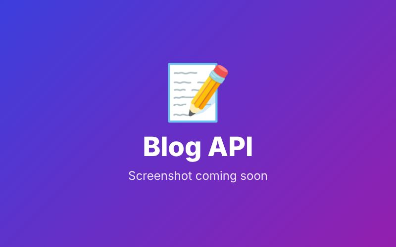
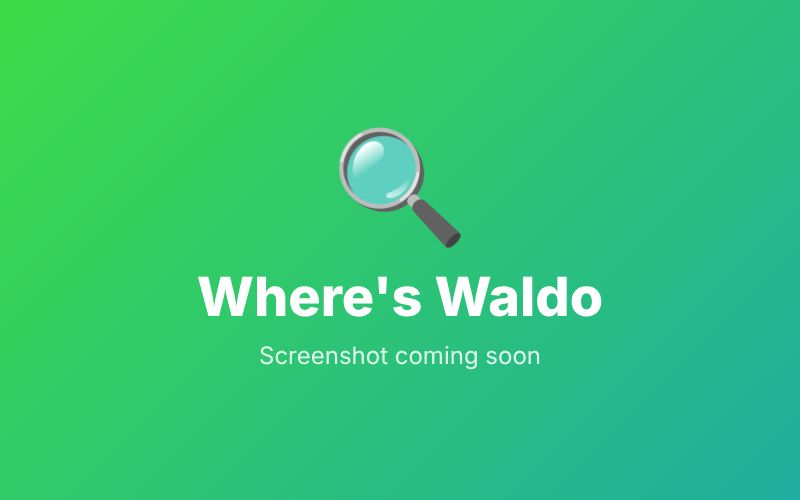
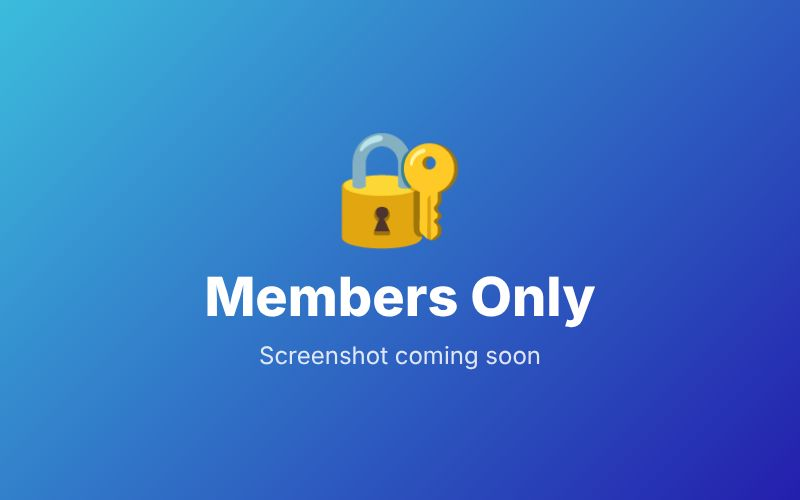
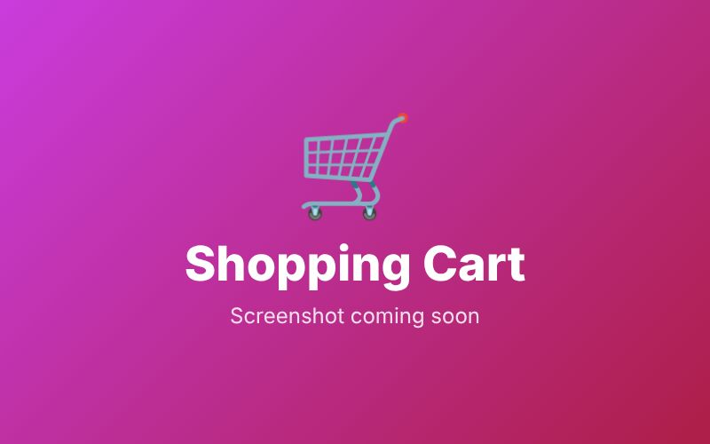
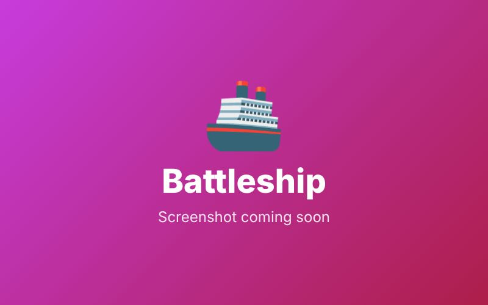
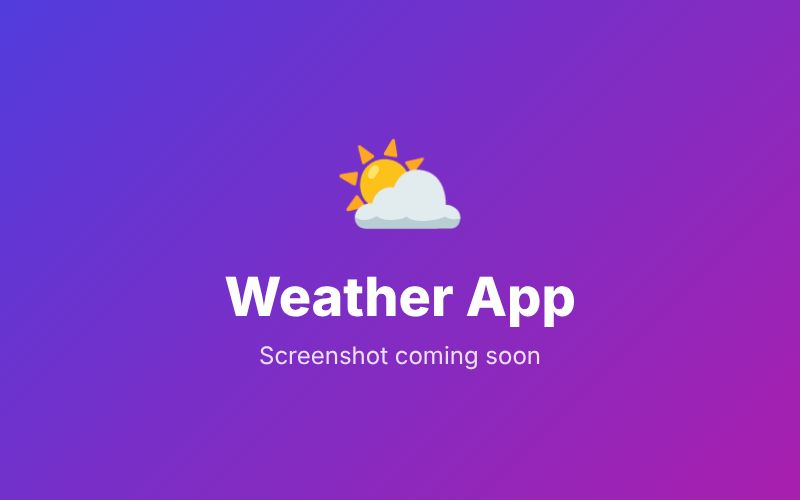
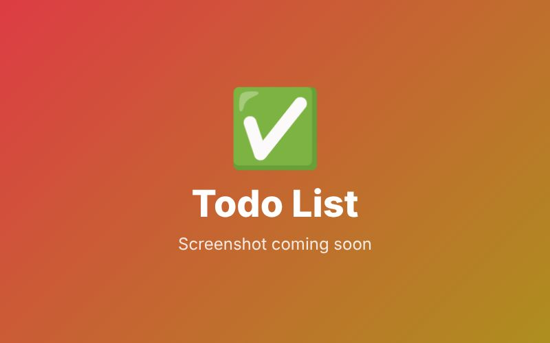

Full-stack JavaScript developer · Augusta, Georgia
Hi, I'm Motaz.
I build web apps from the database to the button.
I taught myself full-stack JavaScript through The Odin Project, building everything from a test-driven Battleship game to a social network with authentication, follow requests and a PostgreSQL database.
About me
I came to software from the customer-facing side of business. I've worked in luxury sales, automotive and hospitality, most recently as a technology specialist at Jim Hudson Cadillac & Lexus. Today I'm an IT cable technician at a Meta data center, working on the physical infrastructure that keeps large-scale services running.
In my own time I've been working through The Odin Project's Full Stack JavaScript path: HTML, CSS, JavaScript, React, Node.js, Express, PostgreSQL and Prisma. I like projects where I have to plan the data model first, then build a clean API and an interface people actually enjoy using.
Years of working directly with customers taught me to listen carefully, explain technical things simply and keep calm under pressure. I speak four languages ([PLACEHOLDER: list your four languages]).
Projects
A selection of my favorite projects from The Odin Project. Each one links to its code on GitHub, where the README explains how it works and how to run it.








Skills
Front end
- JavaScript (ES6+)
- HTML & CSS
- React
- React Router
- Vite & Webpack
- Responsive design
Back end
- Node.js
- Express
- REST APIs
- PostgreSQL
- Prisma ORM
- Auth: Passport, sessions, JWT
Tools & practices
- Git & GitHub
- Jest & test-driven development
- npm
- Chrome DevTools & debugging
- Planning data models
Beyond code
- Customer communication
- Sales & hospitality background
- Data center infrastructure
- Four languages